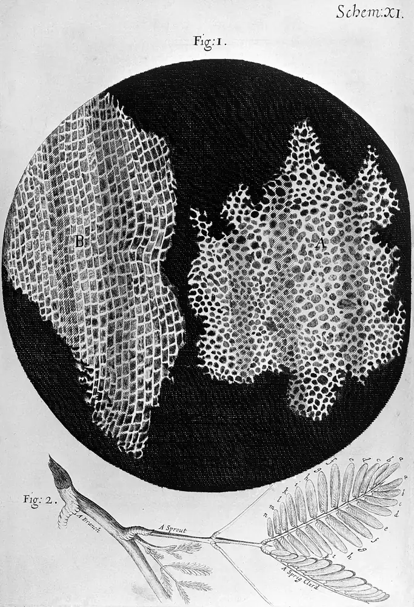
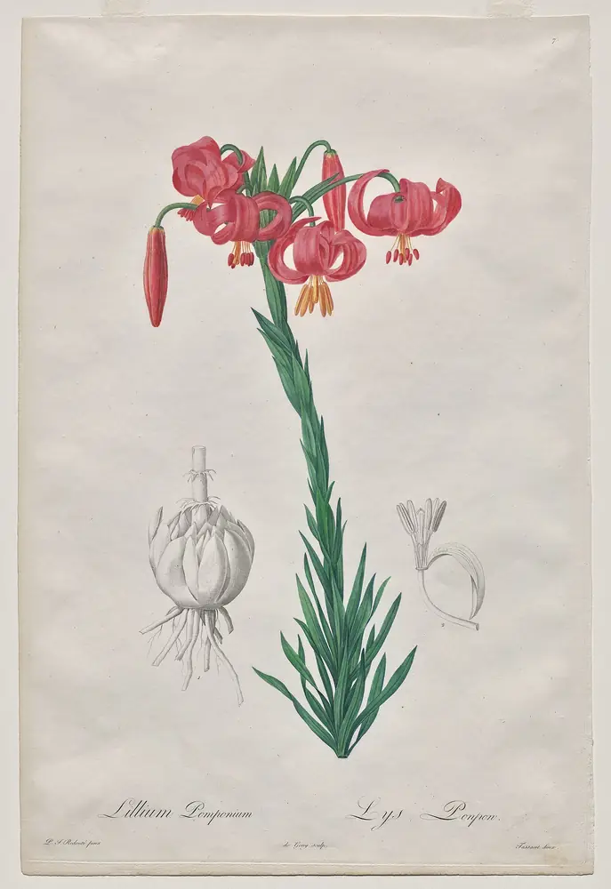
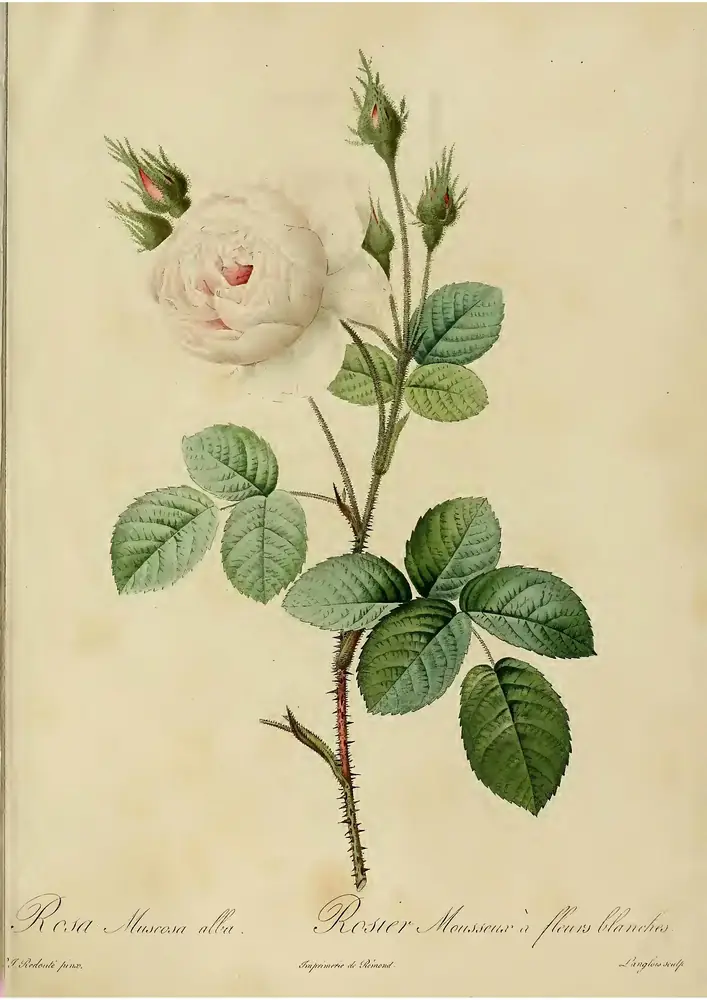

Tobacco smoking
Group 1 · Known cause100–120
in 1,000 smokers get lung cancer by age 75: about 10 to 12 in 100.
4–5in 1,000 lifelong non-smokers do.
Free tools built from the IARC Monographs and published reviews by Wenxin Wan, a cancer epidemiologist.
They describe whole populations, not what caused any one person’s illness.

Tobacco smoking and processed meat are both in Group 1: the evidence that each can cause cancer is equally sure. The risks are not.
100–120
in 1,000 smokers get lung cancer by age 75: about 10 to 12 in 100.
4–5in 1,000 lifelong non-smokers do.
18%
Each 50 grams eaten every day raises the risk of bowel cancer by 18%.
The agent can cause cancer in people. This is the group in which IARC is most certain. It does not say how large the risk is.
The agent probably causes cancer in people.
The agent may cause cancer in people. Aspartame is in this group.
The evidence does not meet the rules for any other group. It does not mean safe.
Free, and in 10 languages

From the IARC Monographs
Which exposures can cause which cancers, and how sure the evidence is for each link.
10 languages

Graded by how strong the evidence is
Risk factors for heart disease, stroke, type 2 diabetes, dementia and more, graded by how strong the evidence is.
10 languages
Plates of plants and sea life from the natural-history books of the past, with their labels.





What you can do
The official recommendations for lowering your own cancer risk, coordinated by IARC (WHO) and its partners. Fourteen actions for Europe, seventeen for Latin America and the Caribbean.
Read the recommendationsLearning by playing: three games